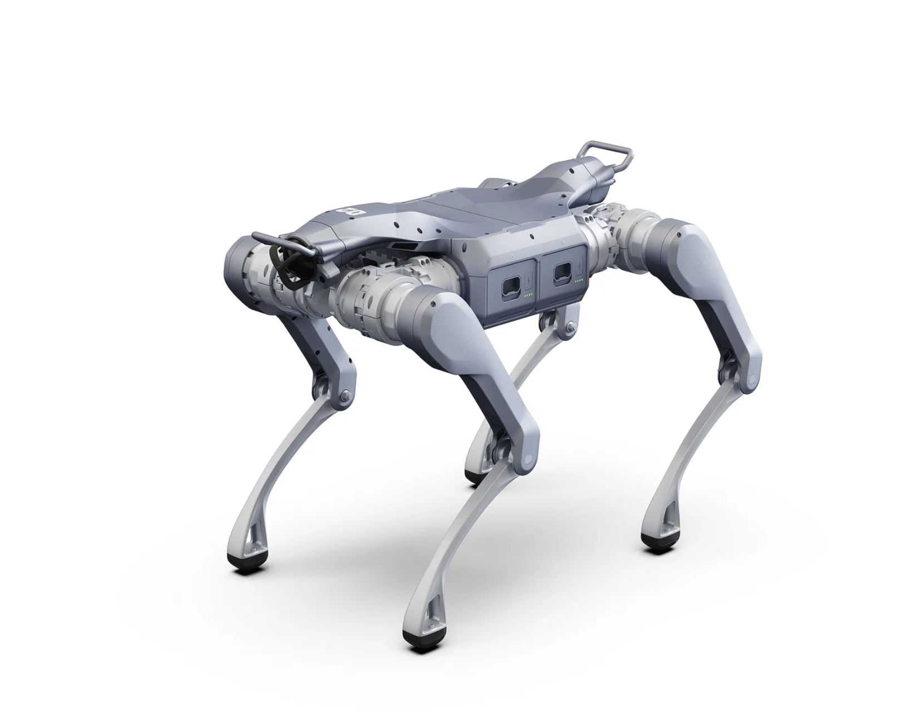

Lab Director

Dr. Huaquan Ying
Assistant Professor
Faculty of Civil and Environmental Engineering
Postdoc

Dr. Timson Yeung
Research Interests: Digital Twin Construction; Autonomous Systems; BIM Collaboration.
PhD Students

Zikang Wang
Research Interests: Construction Robotics; Digital Twin Construction; Uncertainty Modeling.

Zheng Zhao
Research Interests: AI for the Built Environment; BIM Intelligence; Representation Learning.
Robot
